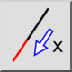
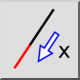
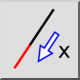
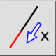

Allonger / raccourcir
Barre d'outil / icône :
 

Menu : Modifier > Allonger / raccourcir
Raccourci : L, E
Commandes : lengthen | shorten | trimamount | le
Ceci est une traduction automatique.
Barre d'outil / icône :
 

Menu : Modifier > Allonger / raccourcir
Raccourci : L, E
Commandes : lengthen | shorten | trimamount | le
Cet outil peut être utilisé pour allonger ou raccourcir les lignes ou les arcs d'une quantité donnée.